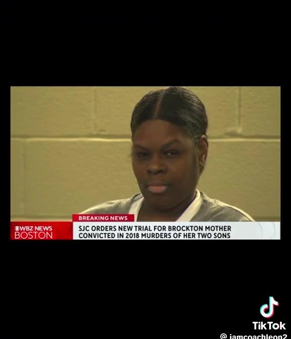
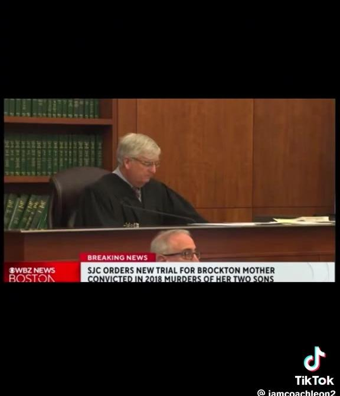
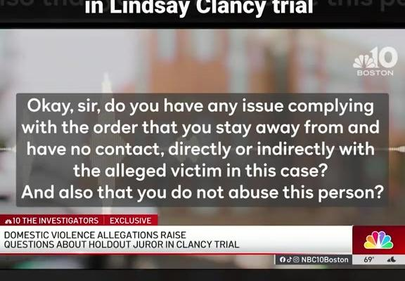
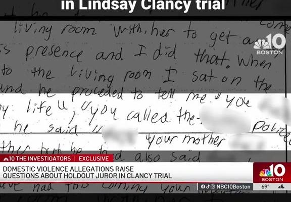

Three Cases, One Pattern
What the Lindsay Clancy trial and the two videos documenting it actually reveal about whose account of themselves the justice system chooses to believe.
On September 4, 2026, a Massachusetts judge declared a mistrial in the case of Lindsay Clancy, the Duxbury mother who admitted to strangling her three young children (Cora, 5, Dawson, 3, and Callan, 8 months) in January 2023. Clancy never denied killing her children; her defense rested entirely on a claim that severe postpartum psychosis left her not criminally responsible, and under Massachusetts' McHoul standard, prosecutors, not the defense, bore the burden of proving she was sane, a notably defendant-favorable rule (WBUR). After six days of deliberation, the jury deadlocked 11–1 in favor of finding her not guilty by reason of insanity, and the court declared a mistrial (NPR; CNN).
Coverage from PBS, NPR, and MSNBC framed the killings less as a triple homicide than as a window into "a broken postpartum mental health system" (PBS NewsHour). A CBC piece was headlined simply that she "has so many supporters" (CBC). Her husband, Patrick Clancy (the father of the children she killed), publicly asked the community to "find it deep within yourselves to forgive Lindsay, as I have" days after their deaths (ABC7 NY). Rather than jail, Clancy has spent the years since 2023 in psychiatric hospital custody, arraigned remotely from a hospital bed rather than led into a courtroom in restraints (CBS News). None of this means she has escaped accountability: a mistrial is not an acquittal, and a retrial is expected. But the posture around her, institutionally and culturally, has been one of grief and forgiveness rather than presumed dangerousness.
The same judge ruled the opposite way for a Black mother
A TikTok video circulating the same week lays out the comparison in stark terms: the judge presiding over Clancy's trial also presided, four years earlier, over the trial of a Brockton mother, and ruled oppositely on the one piece of evidence that decided both cases.
Plymouth Superior Court's Judge William F. Sullivan (the judge presiding over Clancy's trial) also presided over the 2022 trial of Latarsha Sanders, a Black mother from Brockton convicted of stabbing her two sons, 8-year-old Edson Brito and 5-year-old La'Son Brito, to death in February 2018. Both women raised a mental illness defense. Both cases were prosecuted by the same office, Plymouth County DA Timothy Cruz's. The outcomes diverged sharply on exactly the evidence that mattered most.
Commonwealth v. Clancy
- Location
- Duxbury, MA
- Date
- Jan. 24, 2023
- Method
- Strangled, 3 children
- Defense
- Postpartum psychosis
- Psychiatric records
- Admitted: jury saw them
- Outcome
- Mistrial, hung jury, Sept. 4, 2026
Commonwealth v. Sanders
- Location
- Brockton, MA
- Date
- Feb. 2018
- Method
- Stabbed, 2 sons (ages 8 & 5)
- Defense
- Schizophrenia / psychosis
- Psychiatric records
- Excluded: jury never saw them
- Outcome
- Convicted 2022; SJC ordered retrial, Aug. 2026


At Clancy's trial, her psychiatric records were admitted for the jury to weigh. At Sanders' trial, Judge Sullivan excluded thousands of pages of her psychiatric records documenting schizophrenia and paranoia, keeping them from the jury entirely (NBC Boston; WBUR). Sanders was convicted and sentenced to two consecutive life terms without parole. It took until August 6, 2026 (nearly four years, and only after Massachusetts' Supreme Judicial Court unanimously vacated her conviction) for the exclusion of that evidence to be recognized as what Justice Frank Gaziano called "prejudicial error," a violation of a state law that says a defendant's hospital and psychiatric records "shall be admissible" on exactly this question.
"the exclusion of the defendant's relevant medical records relating to the diagnoses or treatment of mental illness constituted prejudicial error."Justice Frank Gaziano, Massachusetts SJC, Aug. 6, 2026
The legal principle that helped produce sympathy and a hung jury for Clancy, letting the jury see the mental illness evidence, is the same principle a Black woman in front of the same judge had to fight for nearly four years, from a maximum-security cell, to have recognized at all. Sanders now awaits a retrial in 2026, years after her sons' deaths, while Clancy's mental state was contested in real time, in front of a jury already inclined to give her the benefit of the doubt.
The one juror who didn't go along with it, and who the press investigated
The jury that deadlocked on Clancy was not evenly split in composition. According to juror Paula Devlin, who described the panel to CBS Mornings, eleven of the twelve jurors were white; the lone Black man on the jury was the sole holdout, the only vote against finding Clancy not guilty by reason of insanity (CBS Mornings, via Louder with Crowder). Other jurors called him "arrogant"; Clancy's defense attorney, Kevin Reddington, told the press, "I hope that guy can sleep well at night," and suggested he had "whatever his agenda" was.
On September 11, 2026, NBC10 Boston's "Investigators" unit published an exclusive into that one juror's personal history, without naming him, but making him identifiable through detailed court records: a 2021 assault charge (later dismissed) for allegedly grabbing his then-wife by the throat, a restraining order his teenage nephew obtained after an alleged altercation in which the juror told him "you ruined my life" and "you've had this coming your way for a long time," and an active eviction case over more than $12,000 in unpaid rent that a landlord pursued during the trial itself (NBC Boston). No comparable investigation was published into the backgrounds of the eleven white jurors who voted the other way.


That asymmetry did not go unnoticed. Commentator Shermichael Singleton asked pointedly: "Are you planning to investigate the history of the 11 White jurors, or is it just the Black guy?" Florida Governor Ron DeSantis put it more bluntly: "A man objected to allowing a woman to kill her three young kids and get away with it, so NBC is trying to smear that juror." (Mediaite) Separately, CBS host Gayle King's on-air reaction to learning the holdout was Black ("A Black man is a holdout juror? … Whoa. I have to sit with that for just a second") drew its own criticism for revealing an assumption that a lone dissenter, already being cast as "arrogant" and suspect, would default to being white (Mediaite).
To be fair to NBC10: none of the underlying facts it reported have been shown to be false, and Massachusetts' own juror questionnaire does ask prospective jurors to disclose arrests, charges, and court orders, so there is a legitimate journalistic question about whether jury selection functioned properly.
What critics are objecting to is not that the facts are wrong, but that scrutiny this intense (surfacing a private citizen's divorce, a dismissed charge, and a rent dispute) was trained on the one juror whose vote broke from the group, who happened to be the panel's only Black member, while the other eleven faced no equivalent examination.
The same pattern, at scale, in New York
Zoom out from this one courthouse and the same dynamic shows up as hard data. Case Analytica has documented that New York's Board of Parole releases white applicants at rates far exceeding those for applicants of color, a gap that has been widening, not closing. Because everyone in the applicant pool has already served their court-ordered minimum sentence, this gap cannot be explained by the underlying offense; it shows up in who gets believed when they say they've changed.
NYS Parole Board release rate, by race
Source: NYU School of Law Center on Race, Inequality, and the Law & Parole Preparation Project, "Freedom Delayed, Justice Denied" (2024); confirmed in WXXI reporting through March 2025.
Jose Saldaña was denied parole four times despite earning a college degree and running restorative-justice programs from inside prison, the Board repeatedly falling back on boilerplate language about the "nature of the crime" rather than the person he had become (Bolts). Researchers estimate that if applicants of color had been released at the same rate as white applicants, between 3,650 and 4,150 more people would have gone home between 2016 and 2025.
The pattern underneath all three
Put side by side, these three moments describe the same underlying sorting mechanism. A white woman who killed her children gets her psychiatric evidence in front of the jury and a sympathetic hung jury; a Black woman in the identical courtroom, in front of the identical judge, had that same category of evidence kept from her jury and needed a nearly four-year appeal to undo it. A jury leaning toward forgiveness for that white defendant included one dissenting voice for accountability. That voice, the panel's only Black member, became the sole subject of a media investigation into his personal life, while the eleven who agreed with the sympathetic outcome did not. And at the level of an entire state system, New York's parole board extends the credibility of "he's changed, he's earned release" to white applicants at a rate that is now a third higher than it extends to applicants of color, systematically, year after year.
None of these three things proves the others: they come from different states and institutions, and involve different kinds of decisions. A jury verdict, a judge's evidentiary ruling, a news outlet's editorial choices, and a parole board's release rate are not interchangeable. Clancy has not been convicted of anything and may yet be. NBC10's report contained facts that, on their own, a news organization could defend reporting. And postpartum psychosis is a real, serious, under-treated condition, and sympathy for someone experiencing it is not itself wrong.
But taken together, the through-line is hard to miss: forgiveness, the benefit of the doubt, and freedom from scrutiny flow more easily toward white defendants and white jurors than toward Black ones facing comparable facts. When a Black person disrupts that flow, the scrutiny withheld from everyone around him gets trained on him alone. That is the same mechanism New York's parole data shows operating at scale: the outcome hinges less on any one villain's biased call than on whose account of themselves gets believed, and whose doesn't.